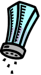

Do It! Vernier Science: Measure Temperature
 The Challenge
The Challenge
Your challenge is to measure the temperature in real-life situations using Vernier probes and software. You will use addition and subtraction to solve problems using temperature data.
Project Steps
-
Use the Go Temp! Sensor
-
Conduct the Go Temp! Experiments
-
Create a Presentation
Use the Go Temp! Sensor
The experiments in this challenge use the Vernier Go Temp! sensor.
Go Temp! is an electronic temperature sensor that plugs into your computer.
If you have not used this sensor before, it is best to practice with the Learning To Use GoTemp! Activity.
Download the Practice Activity
Conduct the Go Temp! Experiments
Use the Vernier Go Temp! sensor to conduct at least one of the three temperature experiments below. Start with the one that interests you the most. Answer each of the questions on the Vernier activity sheets.
Hold Everything! Comparing Insulators
What kinds of cups are best for keeping drinks hot or cold?
Baggie Mittens
What material makes the best insulation for warm mittens?

Cold as Ice
How does salt affect the freezing temperature of water?
Analyze the data from one of your experiments. Answer the following questions:
- Find the difference between the starting temperature and the ending temperature to determine the change in temperature. Record these values so that you can include the data in your presentation.
- Did the temperature increase or decrease?
- How much did it increase or decrease?
- How long did the change take?
- How did you know when you were finished with the experiment?
- What did you learn from the experiment and the change in temperature?
Create a Presentation
Create a presentation to demonstrate what you learned about temperature, using PowerPoint, Google Slides, or another presentation software.
Be sure to include the following:
- Screenshots of your work in Logger Lite for one of your experiments
- Your data, graphs, and other experimental results from one of your experiments
- Photos or movies of your experiment in action
- Your observations during the experiment(s)
- What you learned from the experiment(s)
- The difference between the starting and ending temperatures
What new questions do you have about temperature? Think about how you could change one of the above experiments to answer some of your questions. Or, think about how you might create your own experiment from scratch.